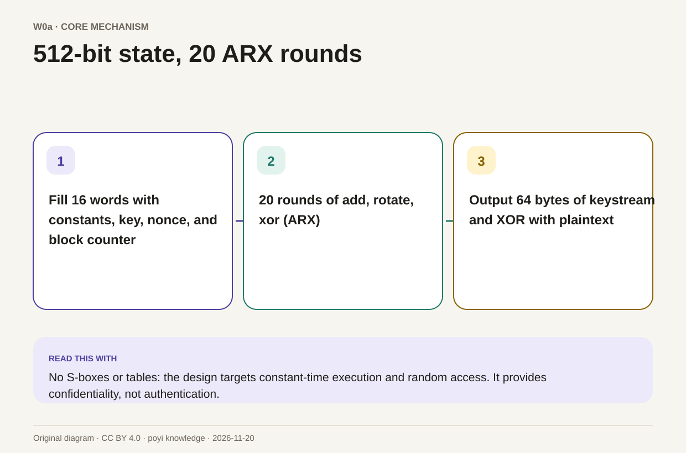
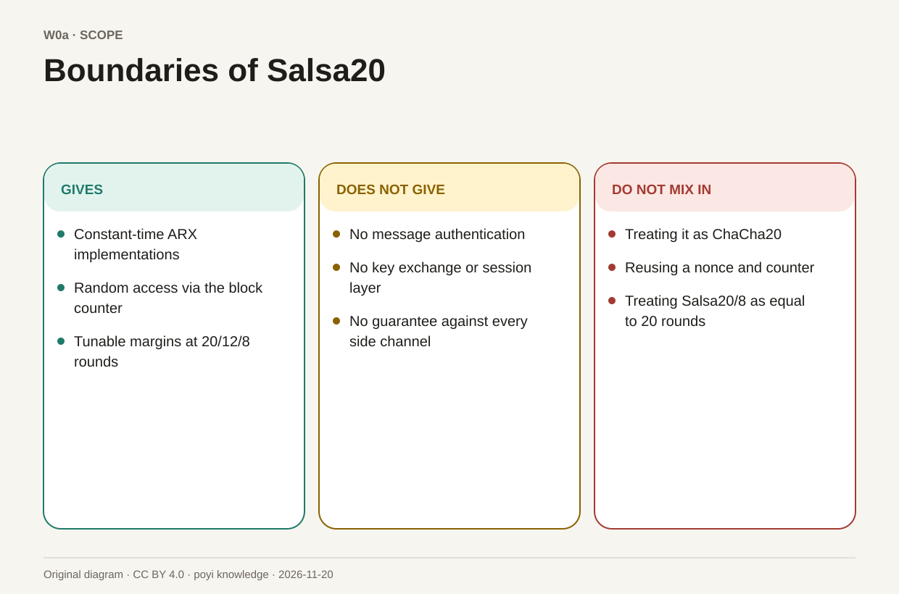

Principles
Algorithm: Salsa20 (Salsa20 流密码). Salsa20 is a stream cipher designed by Daniel J. Bernstein. Its state is sixteen 32-bit words (512 bits, or 64 bytes) and every operation it performs is one of three: addition, rotation, XOR. That is why it is called an ARX cipher. One invocation works like this:
- Fill the state as a four-by-four grid: the first row holds the constants
"expand 32-byte k", the next two rows hold the 256-bit key, the next row the 64-bit nonce, and the last row the 64-bit block counter. Run 20 rounds (ten double rounds). Each round rotates, adds and XORs the words of each column, does the same to the rows, and then adds the sixteen words back in. Columns and rows use the same quarter-round function. Serialize the final state in little-endian order to produce a 64-byte keystream block, which is XORed with the plaintext. The properties that matter:
- No S-boxes, no tables. Every operation is integer addition, a rotate, or an XOR. That makes it naturally constant time, with no data-dependent cache access to leak the key — the central selling point when it was designed. - No key schedule. The key simply sits in the state, so changing keys costs nothing. - Random access. Want the n-th keystream block? Set the block counter to n. - 64-byte blocks, four times AES's block size, which is kinder to serial CPUs. There are also reduced-round variants, Salsa20/8 and Salsa20/12, proposed in the same design document: fewer rounds for speed, with a correspondingly thinner security margin.

Why it matters
Salsa20 answered the question AES could not: how do you encrypt fast in software when your hardware has no AES instructions?
The story is specific. Bernstein designed it in 2005 (originally "Snuffle 2005"), when most x86 servers still had no AES-NI and software AES was slow, while Salsa20 needs only additions, rotations and XORs — one or two instructions on any CPU. Bernstein later shipped both AES and Salsa20 inside NaCl and let people benchmark for themselves.
Salsa20 also wins on engineering qualities:
- Constant time. No tables means no cache-timing attack surface. A correct software implementation is simply not exposed to the class of attack Bernstein himself demonstrated against AES in 2005. - Key agility. The key goes straight into the state; rotating keys is free. - Small code. A few hundred lines of C get it right, unlike AES, which drags in multi-table optimizations and masking. - Open analysis. Bernstein published the full specification and security analysis in 2007 (eprint 2007/472), and in 2008 Salsa20 entered the final eSTREAM portfolio as the software stream cipher of choice.
It also produced two descendants: XSalsa20 (2008, nonce extended to 192 bits) and ChaCha (2008, a redesigned round function with stronger diffusion). ChaCha is the one that conquered the Internet.
Applications
- NaCl and libsodium: Bernstein's own networking and cryptography library (NaCl, 2008) and its community successor libsodium both make Salsa20 a primary primitive. libsodium ships Salsa20, Salsa20/12, Salsa20/8, XSalsa20 and ChaCha20. - Go's extended standard library:
golang.org/x/crypto/salsa20, whose documentation states it implements Bernstein's specification and also supports XSalsa20. - RustCrypto'ssalsa20andsalsacrates (20 rounds and 12 rounds respectively). - OpenSSL: the EVP interface exposes Salsa20 and ChaCha20 as ciphers. - The Linux kernel: its crypto API ships both a generic implementation,crypto/salsa20_generic.c, and an x86 assembly one,arch/x86/crypto/salsa20_glue.c— the latter was patched for the zero-length crash tracked as CVE-2017-17806. - Tor: its NaCl transport uses NaCl's secretbox, i.e. XSalsa20-Poly1305. - What actually conquered the Internet was the successor: ChaCha20 (RFC 8439, June 2018) ended up in TLS 1.3, WireGuard, OpenSSH (chacha20-poly1305@openssh.com), Signal's XChaCha20-Poly1305, the system crypto libraries of iOS and Android, and essentially every QUIC implementation.
Put bluntly: Salsa20's own deployment footprint is modest, but it shaped nearly every place software encryption ended up.
Limits & attacks
No practical attack on the full twenty rounds of Salsa20 is known. Its attack surface is entirely about usage.
- Nonce reuse: repeating a nonce under one key repeats the keystream and directly exposes the XOR of two plaintexts. Salsa20's 64-bit nonce space looks roomy, but with random generation the birthday bound means the collision probability becomes non-negligible after roughly 2^32 messages. XSalsa20's 192-bit nonce exists precisely to remove that awkwardness. - No authentication whatsoever: Salsa20 is a keystream and nothing more. Flip a ciphertext bit and the plaintext bit flips with it, so content can be altered, truncated or spliced. Any real deployment needs a MAC — XSalsa20-Poly1305 is the standard answer. - Reduced-round variants have thinner margins: Crowley gave an attack on Salsa20/5 at about 2^165 operations, and Aumasson et al. (2008) gave a 2^151 attack on Salsa20/7 and estimated 2^251 for Salsa20/8. Twenty rounds remain secure, but Salsa20/8 is not "equally safe, just faster". - Segmentation must match: Salsa20 is message-oriented — keystream block boundaries depend on how the message was chopped up. If sender and receiver disagree on the segmentation, decryption goes wrong. The Go
x/crypto/salsa20documentation warns about this specifically. - No protection against related-key attacks: with no key schedule and the key sitting directly in the state, NaCl explicitly declines to promise related-key resistance. - Side channels: without tables, cache timing largely disappears; but an implementation that branches on secret data or compares in variable time still leaks. - Quantum: Grover cuts brute-force search on a 256-bit key from 2^256 to about 2^128 — still infeasible, and the shared fate of every 256-bit symmetric cipher. - One commonly misunderstood point: known "slid pair" collisions exist in the Salsa20 core function, and the built-in diagonal constants are exactly what block them. That is not a vulnerability; it is deliberate design.

History
- 2005: Bernstein designed Salsa20, originally Snuffle 2005, publishing the design document on April 27, 2005. - December 24, 2007: Bernstein published "The Salsa20 Family of Stream Ciphers" as eprint 2007/472, with the full specification, test vectors and security analysis. Around the same time he wrote "Salsa20/8 and Salsa20/12", formally proposing the reduced-round variants. - April 2008: the final eSTREAM portfolio was announced, with Salsa20 selected among the software stream ciphers. - 2008: Bernstein submitted NaCl (the forerunner of libsodium), where Salsa20 became one of the main primitives. The same year he proposed XSalsa20 (192-bit nonce) and ChaCha, a Salsa20 variant with a redesigned round function and stronger diffusion. - Around 2010: ChaCha landed in projects such as Tor and OpenSSH; the BLAKE team, finalists in NIST's SHA-3 competition, borrowed ChaCha's core. - 2013: ChaCha20 was adopted at scale in Android 4.1 (KitKat) and iOS as the software encryption path for devices without AES hardware acceleration. - June 2016: RFC 7905 brought ChaCha20-Poly1305 to TLS 1.2. - June 2018: RFC 8439 standardized ChaCha20 and Poly1305 for IETF protocols, and TLS 1.3 listed the suite among those implementations should support.
Worked example & verification
Formal model and reproduction steps
[C=E_K(P;r),\qquad P=D_K(C)]
Salsa20: the registered public parameters, key material or randomness, and message are mapped through the stated transformation to an output checked against the registered criterion. The worked example is a structural reproduction, not a new test vector; parameter ranges, standard versions and implementation details remain source-bound.
References
- Wikipedia search entry for Salsa20 流密码. https://zh.wikipedia.org/w/index.php?search=Salsa20%20%E6%B5%81%E5%AF%86%E7%A0%81
- Handbook of Applied Cryptography (Menezes, van Oorschot, Vanstone). https://www.cacr.math.uwaterloo.ca/hac/